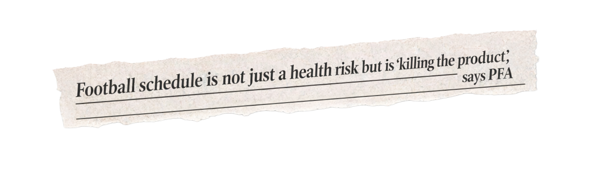

Are we really seeing an increase in injuries in elite-level football? And if so, is the relentless fixture schedule to blame?
Over the last few years, prominent figures within football have become increasingly vocal in their complaints over the fixture schedule becoming more congested and its effect on players' fitness and long-term health.

BBC SportBut are these claims valid?
Are we actually seeing a meaningful increase in player injuries?
Is the fixture schedule actually getting more congested?
Picture the inside of a football stadium.
This stadium is divided into five stands, representing each season from 2020/21 to 2024/25 in the top five European leagues. Each seat represents 30 days missed through a soft-tissue injury.
This is the 2020/21 season.
A total of 12,241 days were missed through injury.
This is the 2021/22 season.
A total of 12,469 days were missed through injury.
2022/23 season.
A total of 12,364 days were missed through injury.
In the 2023/24 season, a total of 13,855 days were missed through injury.
Last season, 2024/25, saw the highest number of days lost to soft tissue injuries in five years.
A total of 14,559 days were missed through injury.
The number of injuries is definitely rising.
But is the fixture schedule getting more congested too?
The number of matches played across the top five European leagues isn't actually increasing.
These figures include matches played across all competitions by these teams.
We also looked at the number of congested matches, specifically for Premier League teams, and found no increase in this either.
The schedule hasn't actually become more congested on a club level.
Ben Dinnery, Premier League Data Analyst and founder of Premier Injuries, isn't surprised by this:
"Nothing surprises me in terms of the narrative being pushed. We have this clickbait mentality, this need to create headlines.
Congestion is just this bus to jump on."
So, if fixture congestion isn't increasing, then what is causing the increase in injury rates?
While the physical demands of elite-level football have always increased year-on-year,
the past decade has seen a particularly significant rise.
The number of matches may not have changed, but what happens inside those matches has shifted dramatically.
Recent tactical shifts towards a 'high press' mean players cover more ground at higher speeds.
Players are covering significantly more ground while sprinting every match.
It's not just distance, the number of explosive efforts.
Each individual sprint places physical stress on players' bodies and increases the likelihood of soft-tissue injuries.
It's not just sprints that are increasing. The amount of running done at the threshold below is also seeing a marked increase.
Combining sprints and high-speed running, the total distance covered by player has risen by more than a quarter.
New stoppage-time rules introduced mean matches are lasting around five minutes longer on average.
These trends point to a clear conclusion: even if fixture numbers haven’t increased, the physical cost of each match has. Players are sprinting more often and for longer, with no extra recovery time. The result is constant high-intensity strain, reflected in rising injury rates.
NHS physiotherapists Martin Chau and Harry Payne link this directly to more soft-tissue injuries, especially muscular ones driven by cumulative load and limited recovery. As Payne put it, “it’s more muscle fatigue and reduced recovery time increasing those injury chances.”
“Players are going into fixtures still with DOMS (Delayed Onset Muscle Soreness) … with muscles that haven’t fully recovered from the previous game,” he added.
Hamstring injuries stand out as the clearest indicator of increased intensity, as both Chau and Payne testified. Essential for sprinting and explosive movement, they’ve risen by 62% over five seasons. “It’s always hamstrings,” said Chau, noting they make up “more than half of the muscular injuries in sports.”
Payne added that prevention is difficult: “One of the key reasons is that it’s quite difficult to train your hamstrings to prevent that kind of thing. What you see in a lot of players have got really big, strong hamstrings, but the moment they try and sprint, is when it goes. And that’s a really tricky thing to prevent in players or train against.”
Recovery time remains the key issue. Chau emphasised the importance of the recovery window and how it links to increasing physical load: “it takes up to 72 hours for muscles to fully recover after a high intensity match. If there is an increase in match intensity, that recovery time is going to be a little bit longer.”
As for solutions, increasing recovery time is the most obvious fix but this would require prolonging the season and players have already voiced concerns over the lack of time off they receive. Payne pointed out the global shift from three to five substitutes as a positive step in managing load, and also suggested that eliminating non-essential matches like FA Cup replays has helped to offset the load of congested fixture windows.
Playing for elite teams requires significant international travel. This year's World Cup spans three countries and four main time zones. According to the BBC, the sixteen host cities are up to 2,800 miles apart. For players, this means more distance travelled and time spent travelling between matches.
Jonathan Hughes, a sport scientist from Cardiff Metropolitan University, says this travel may lead to increased injuries.
"QUOTE"
Jetlag is the effect that crossing time zones at high speed has on the body. According to researchers from the University of Gloucester and Birmingham City University, jet lag can take many forms, including fatigue, irritability, digestive issues, and loss of appetite.
Research has linked jetlag to increased fatigue and soreness among players, which may increase injury likelihood.
Hughes has researched the effect of travel and jetlag on Premier League Players. "EXPLAINER QUOTE" The research split players, including Premier League players, into two groups: those who were injured and those who weren't. As a group, injured players experienced more international travel over more hours and time zones and across further differences.
"QUOTE ABOUT DANGER"
With the World Cup fast approaching, players will be expected to travel long distances to attend the tournament. What can be done to lessen the impact of this travel on their performance?
According to Hughes, it's all in SOMETHING.
"QUOTE ABOUT HOW TO LESSEN THE IMPACT OF TRAVEL ON INJURY".
Psychological stressors are known to increase injury rates in elite athletes, including professional footballers. But research is just beginning to explore a new kind of psychological stressor: social media scrutiny.
Footballers have long been the subject of intense media attention, but the rise of social media has caused this to skyrocket. In a 2023 review, Assistant Professor Ranjith Kamal of India's Government College of Physical Education suggested that "Players exposed to high volume negative social media commentary show 32-45% greater anxiety symptoms following matches", a stressor which may, in turn, increase injury susceptibility.
With increased media attention comes increased scrutiny and hate. Last season, charity Kick It Out reported 621 online instances of discrimination, and according to the Observer, football-related online abuse more than doubled between the 2023-24 and 2024-25 seasons.
The problem is so prevalent that the Premier League have developed a specialist unit tasked with finding the sources of online abuse. Since 2020, the league have investigated over 3,000 cases of online abuse and discrimination. In February of this year, this resulted in police investigations into the online racial abuse of four Premier League players: Wolverhampton's Tolu Arokodare, Sunderland's Romaine Mundle, Chelsea's Wesley Fofana and Burnley's Hannibal Mejbri.
Millie Beaton from the charity United Against Online Abuse says such online abuse can impact the health of professional athletes: "Through research and engagement with sportspeople, including that conducted by the FIA, our United Against Online Abuse coalition and our scholars, we know that online abuse can have a significant physical and mental toll".
Ben Dinnery thinks injury rates are worth being concerned about: “There is a tipping point, absolutely. You have to wonder at what point it is, too much, and when we will reach that point.”
It’s unlikely that these injuries can be explained by one factor: travel, media involvement, or indeed congestion. Instead, the “perfect storm” is “multifactorial”, Ben says. And though all of these factors might contribute to injury rates, there may be countless more.
“There's no magic bullet here. We really need to move away from some of those headline knockers to understand what’s happening and potentially why it’s happening.”
So what can be done to move past blaming congestion, and look towards lowering these rates?
“Neural efficiency is something which I think it's going to be a big part in understanding readiness to engage in, and return to, to the pitch,” Ben says. “I’m working with a company called Oracle at the moment that does a lot of work in blood biomarkers, to GPS, to training logs, to sleep, to nutrition. They are able to harness the power of AI technology that will pick up minutia discrepancies in player movements, which have historically been invisible to the naked eye.”
With technology growing rapidly more advanced, Ben is hopeful that injury levels can be tackled.
“There’s lots of exciting things on our horizon and hopefully, you know, all of these things will come together try and keep that injury burden to a reasonable level.”
Injury data was collected by Sanan Muzaffarov and publicly available on Kaggle.com: https://www.kaggle.com/datasets/sananmuzaffarov/european-football-injuries-2020-2025.
We analysed the data by categorising injury types into broad categories and summing the number of injuries in each category.
Congestion data was collected manually.
We found the date of each Premier League match over the past five years on Excel4Soccer: https://www.excel4soccer.com/. We then summed the number of times two games happened within four days of each other for each team and compared these totals across seasons.
We also manually collected the number of matches played by each Premier League team across the same five seasons using data from Transfermarkt: https://www.transfermarkt.co.uk/. We added the number of games played each season across all teams.
Figures for match intensity were sourced from: https://knowledge.lancashire.ac.uk/id/eprint/57797/9/57797%20Allen%20et%20al.%20VOR.pdf
AI, including Claude AI and ChatGPT, was used to assist in the programming and the design of this website. All copy was written without the assistance of AI. ChatGPT was used to create the ripped paper backgrounds of the headline images.